VIWIZ VI, VIM Spickzettel
Dateien
Die hier aufgeführten Dateien und Verzeichnisse werden zur Konfiguration
oder zum Speichern von Metadaten verwendet.
- ~/.vim/
- ~/.gvimrc
- ~/.gvimrc.after
- ~/.vim-cache/
- ~/.viminfo
- ~/.vimrc
- ~/.vimrc.after
- ~/.vimrc.before
- ~/.NERDTreeBookmarks
Tastaturlayout
Mit einer deutschen Tastatur ist der VI(M) nicht so einfach zu bedienen und manchen Kommandos
sind schwieriger zu erreichen als mit einem englischen Tastaturlayout.
Die Bilder zeigen den Unterschied zwischen englischem und deutschem Tastaturlayout.
Standard. Im deutschen sind die Tottasten ^ und ´ aktiviert
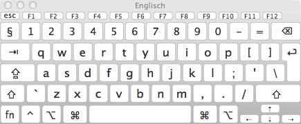
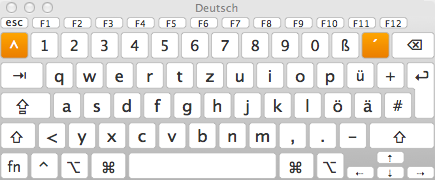
Mit gedückter Umschalt-Taste.
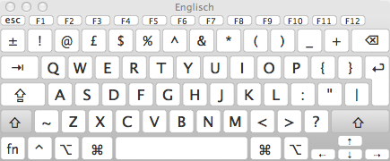
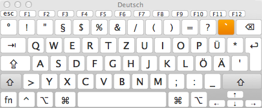
Mit gedrückter Steuerungs-Taste. Die Tottasten sind dekativiert!
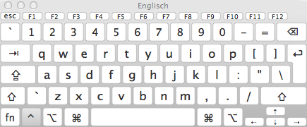
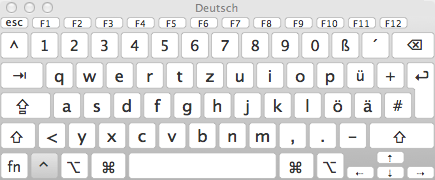
Mit gedrückter Alt-Taste.
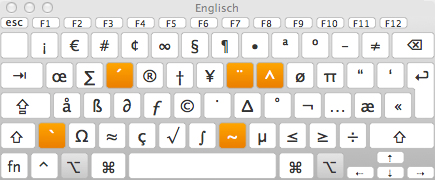
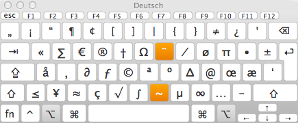
Mit gleichzeitig gedrückter Umschalt- und Steuerungs-Taste
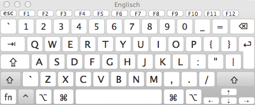
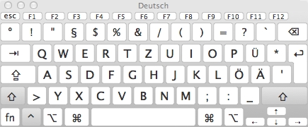
Mit gleichzeitig gedrückter Umschalt- und Alt-Taste.
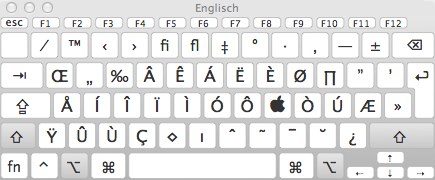
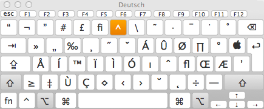
Mit gleichzeitig gedrückter Alt- und Steuerungs-Taste
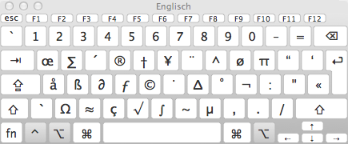
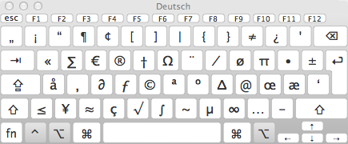
Mit gleichzeitig gedrückter Umschalt-, Steuerungs- und Alt-Taste
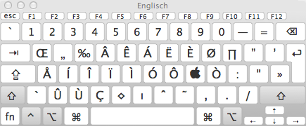
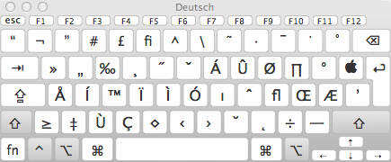
Mit gedrückter Funktions-Taste.
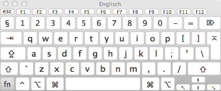
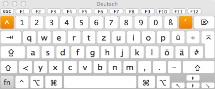
The nature
Ups, eine englische Überschrift in einem deutschen Tutorial?
Ja, die Natur von VIM ist einfach englisch. Viele Befehle lassen sich mit einer
englischen oder amerikanischen Tastaturbelegung einfacher Bedienen als mit einer
Deutschen.
Nichtsdestotrotz ist der VI ein hervorragender und
anpassungsfähiger Editor.
strg]
Springe zum Link oder suche nach dem Wort in der Hilfe
Browse
strg]
Deutsch (Mac):
strgalt6
Springe zum Link oder suche nach dem Wort in der Hilfe
strgo
strgt
Sprung zurück
Hilfen
Um Hilfe zu den Kommandos bzw. insert und visual Mode zu
erhalten müssen die Befehle genauso eingegeben werden wie in
den Beispielen angegeben.
:help word strgd
:helpgrep word
Zeigt die Namen aller Hilfedateien in denen 'word' vorkommt.
:xxxx strgd
Zeigt alle möglichen Optionen zu dem Befehl :xxxx.
:help irgendwas
Normal mode
Suche hilfe für irgendwas
:help x
:help v_
Visual mode
Suche Hilfe für Befehle im visual Mode
:help v_u
:help i_
Insert mode
Suche Hilfe für Befehle im insert Mode
:help i_<Esc>
:help :
Kommandozeilen Kommando
Hilfe für Kommandozeilen Kommandos
:help :quit
:help c_
Kommandozeilen Bearbeitung
:help c_<Del>
:help -
VIM Kommando Argument
:help -r
:help 'option'
Hilfe zu VIM-Option
:help 'textwidth'
Bewegen
Bewegungen werden im normal modus durchgeführt. In den
normal Modus gelangt man durch drücken von Esc. Um ganz
sicher in den normal Modus zu gelangen drückt man einfach 2x
Esc
gg
zum Anfang der Datei springen
Umschaltg ( G)
zum Ende der Datei springen
3G
in die dritte Zeile springen
^
zum ersten Zeichen der Zeile
f<
(find forward)
vorwärts bis Zeichen <
t<
(go to)
vorwärts bis vor Zeichen <
F<
(find backwards)
rückwärts bis Zeichen <
T<
(back to)
rückwärts bis Zeichen <
zt
Positionerung der aktuellen Zeile an den oberen Bildschirmrand
zz
Positionierung der aktuellen Zeile in die Mitte
zb
Positionierung der aktellen Zeile nach unten.
ctrl e
Bildschirmseite nach oben scrollen.
ctrl f
Ganze Bildschirmseite vorwärts.
ctrl b
Ganze Bildschirmseite rückwärts.
ctrl d
Halbe Bildschirmseite vorwärts.
ctrl u
Halbe Bildschirmseite rückwärts.
shift H
Cursor springt an den oberen Bildschirmrand
shift M
Cursor springt in die Mitte des Bildschirms
shift L
Cursor springt in die unterste Bildschirmzeile
Bearbeiten
Die folgenden Eingaben wechseln in den Einfüge-Modus.
i
Einfügen links vom Cursor.
I
Einfügen am Zeilenanfang.
a
Einfügen rechts vom Cursor.
A
Einfügen am Zeilenende.
o
Neue Zeile unterhalb der aktuellen einfügen.
O
Neue Zeile oberhalb der aktuellen einfügen.
R
Überschreiben ab Cursorposition.
r
Ersetze das Zeichen unter dem Cursor und gehe zurück in den Kommando-Modus.
s
Ersetze das Zeichen unter dem Cursor und bleibe im Einfüge-Modus.
cw
Ersetze Wort ab der aktuellen Cursor position.
C
c$
Ersetze bis zum Zeilenende
J
Aktuelle mit der darunterliegenden Zeile zusammenfügen.
~
Wechsel Groß- Kleinschreibung.
Folding
Bestimmte Bereiche zusammen falten.
Funktioniert im Kommado- als auch im Visual-Mode.
zi
Faltung ein- bzw. ausschalten.
za
Aktuelle Faltungen öffnen / schließen.
zA
Rekursiv aktuelle Faltungen öffnen / schließen.
zc
Aktuelle Faltungen schließen.
zC
Rekursiv aktuelle Faltungen schließen.
zv
Entfalten um den Cursor herum.
zR
Alles rekursiv aufklappen.
zM
Alles rekursiv zuklappen.
zf
Faltet den markierten Bereich.
zo
Entfaltet den gefalteten Bereich.
zfa}
Steht der Cursor in einem Block mit geschweiften Klammern wird der Block gefaltet.
zfi}
Steht der Cursor in einem Block mit geschweiften Klammern wird das innere vom Block gefaltet.
zj
Gehe abwärts zum Anfang der nächsten Faltung.
zk
Gehe aufwärts zum Ende der vorherigen Faltung.
zm
reduce `foldlevel` by one
zr
increase `foldlevel` by one
Keyboard Macros
Start der Aufzeichnung mit 'qBuchstabe'.
Beenden der Aufzeichnung mit 'q'.
Aufrufen der Aufzeichnung mit '@qBuchstabe
Der Buchstabe bezeichnet das Register a-z.
Verschiedenes
Digraphs
:digraphs zeigt alle Digraph-Sonderzeichen an.
<ctrl>kCR - fügt einen Zeilenumbruch (^M) ein.
Achtung: die Eingaben sind Case-Sensitiv.
:cd %:h
Wechselt in das Verzeichnis der aktuell geöffneten Datei.
<ctrl> g
Zeigt die aktuelle Position in der Datei.
:w !sudo tee %
Speichert die aktuelle Datei als root.
:scriptnames
Zeigt alle Plugins und geladenen _vimrcs
Weitere Hilfen auf deutsch
http://www-user.tu-chemnitz.de/~hot/VIM/Tips_und_Tricks.html
Weitere Hilfen International
http://www.zzapper.co.uk/vimtips.html
Ein sehr schöner Einleitungssatz:
15 Years of Vi + 7 + Years of Vim and still learning.
http://vimtweets.com
Die Seite funktioniert zur Zeit ( 15. Mai 2012 ) leider nicht.